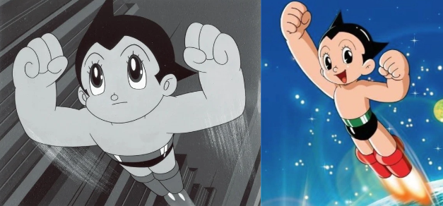
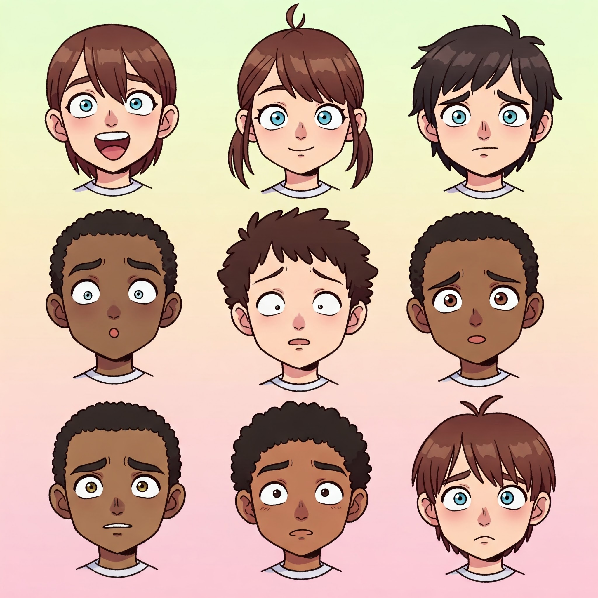
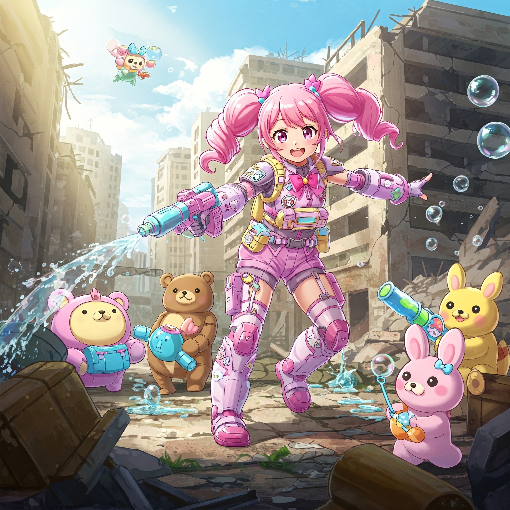

Why is Anime Style So Prevalent in Japanese Art and Culture?
Historical Roots in Manga:
Early Influences: The roots of anime can be traced back to early 20th-century
Japanese animation and, even further, to manga (Japanese comics). Artists like Osamu Tezuka
(often called the "God of Manga") were heavily influenced by Western animation (like Disney) but
developed their own unique visual language.
Post-War Boom: After World War II, manga and animation experienced a massive
boom in Japan. This was partly due to a need for accessible and affordable entertainment, and
partly due to the creative freedom that emerged in the post-war era.
Tezuka's Legacy: Tezuka's style, characterized by large eyes, expressive faces, and dynamic movement, became incredibly popular and highly influential. It laid the foundation for what we now recognize as the "anime" look.

Osamu Tezuka's Astro Boy manga panel compared to a modern anime character.
Cultural Acceptance and Popularity:
Mainstream Entertainment: Unlike in some Western countries where comics and
animation were initially seen as primarily for children, in Japan, manga and anime quickly
became mainstream entertainment for all ages.
Diverse Genres: Anime and manga cover an incredibly wide
range of genres, from action and adventure to romance, slice-of-life, horror, and science fiction. This
broad appeal helped solidify its place in Japanese society.
National Identity: Over time, anime became a significant
part of Japan's cultural identity, both domestically and internationally. It's a unique form of
storytelling and visual expression that is distinctly Japanese.
Artistic and Narrative Advantages:
Expressiveness: The anime style, with its exaggerated features and dynamic
movement, is highly effective at conveying emotions and action. Large eyes, in particular, are
used to show a wide range of feelings.

Prompt:
A simple anime style cartoon, showcasing various emotions through exaggerated features, such as wide eyes for surprise and a frown for sadness.
Visual Storytelling: Anime excels at visual storytelling. The style allows for a lot of
detail and nuance in character design and world-building.
Stylization: The stylized nature of anime allows for creative freedom and the
exploration of fantastical concepts that might be difficult to portray in a more realistic style.
Commercial Success and Global Influence:
Export Powerhouse: Anime and manga have become major export industries for
Japan. Popular series like Dragon Ball, Naruto, One Piece, and Sailor Moon have gained massive
global followings.
Cultural Soft Power: Anime has become a form of "soft power" for Japan,
influencing art, fashion, and popular culture around the world.
Industry Growth: The commercial success of anime has fueled the growth of the
animation industry in Japan, leading to further innovation and development of the style.
Adaptability:
Anime style is very adaptable. It can be used in many different ways, from very cute and child-like, to very serious and mature. This allows it to be used in many different types of media.

First Prompt:
A child-friendly anime soldier girl in a battle, but in a more realistic battleground setting. She could be fighting alongside friendly robots or animals, using non-violent tactics like water balloons or bubbles. The scene should still be bright and colorful, with a playful and adventurous tone.
Second Prompt:
A serious and gritty anime soldier girl in a battle, depicting the utter violence and devastation. The scene should be dark and realistic, emphasizing the harshness of war.
In Summary: The prevalence of anime style in Japanese art is not simply a matter of preference; it's a result of a complex interplay of historical development, cultural acceptance, artistic advantages, and commercial success. It has become a defining feature of Japanese visual culture and a globally recognized art form.